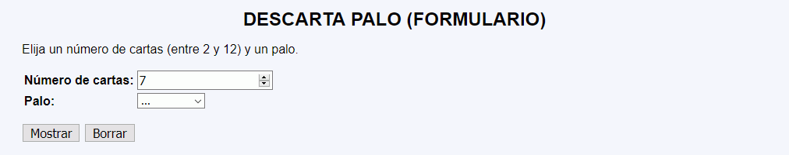
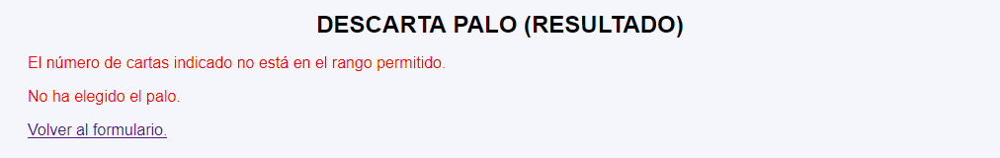
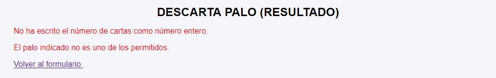
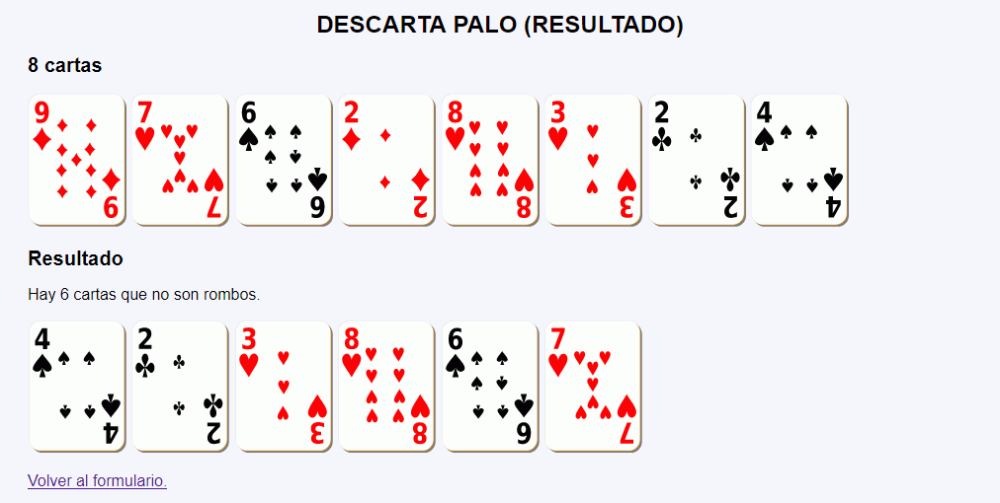
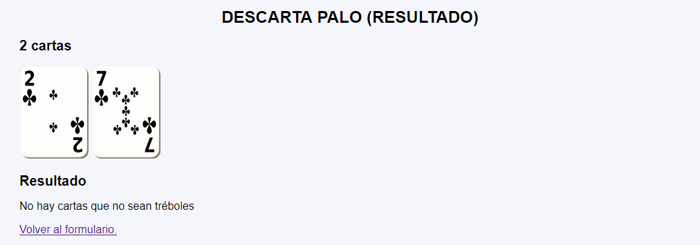

En este ejercicio se debe crear un programa que muestre el número de cartas indicado por el usuario. Además, el programa mostrará también en orden inverso las cartas que no son del palo indicado por el usuario.





<h2>3 cartas</h2>
<p>
<img src="img/t8.svg" alt="8" width="100">
<img src="img/p3.svg" alt="3" width="100">
<img src="img/c8.svg" alt="8" width="100">
</p>
<h2>Resultado</h2>
<p>Hay 2 cartas que no son corazones.</p>
<p>
<img src="img/p3.svg" alt="3" width="100">
<img src="img/t8.svg" alt="8" width="100">
</p>